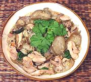

|
Chicken with EggplantThailand | ||||
| Serves: Effort: Sched: DoAhead: |
2 main ** 30 min Yes |
Simple and quick to make but surprisingly satisfying, this dish uses chicken thighs and small eggplants. Serve immediately it is finished because both the basil and eggplant will darken quickly. | |||
|
12 12 2 4 2 15 4 |
oz oz cl T T |
Chicken meat (1) Eggplant (2) Garlic Thai chili red (3) Yellow Bean Sauce (4) Thai Basil leaves Oil |
Prep - (15 min)
|